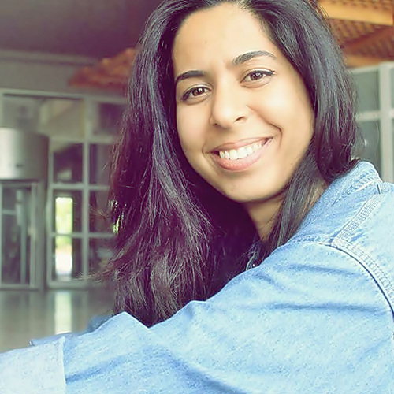
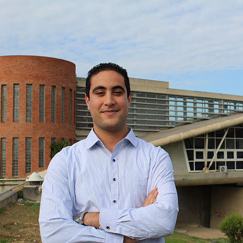
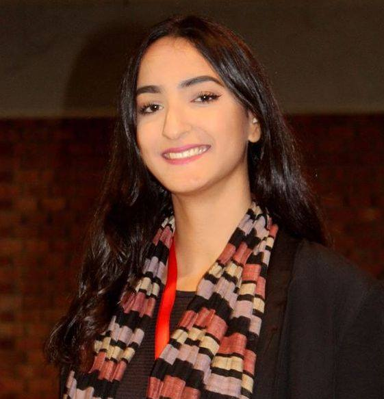
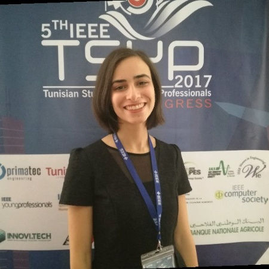
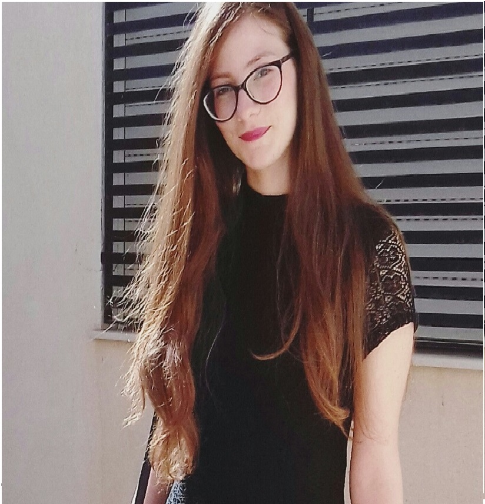

IAS Pathways

Former Chairwoman at IEEE IAS INSAT SBC
"2 years ago, If you ask me what does it mean IAS to you, I'll say it's just 3 words! Nowadays it's much more than that. Through my membership within the society, I met a lot of people, learnt a lot and developped my hard skills as well as my softs skills and all that thanks to the benefits and opportunities given by IAS. If I could do it all over again, I would still pick IAS INSAT SBC as my family! Because the path worth it! "
Islem CHERIF
Student Representative at IEEE Tunisia SectionFormer Chairwoman at IEEE IAS INSAT SBC
"2 years ago, If you ask me what does it mean IAS to you, I'll say it's just 3 words! Nowadays it's much more than that. Through my membership within the society, I met a lot of people, learnt a lot and developped my hard skills as well as my softs skills and all that thanks to the benefits and opportunities given by IAS. If I could do it all over again, I would still pick IAS INSAT SBC as my family! Because the path worth it! "

"The secret of change is to focus all your energy, not on fighting the old, but on building the new" Industry Applications Society allowed me the opportunity to be in contact with people from different countries, not only within IEEE but also with students and professionals from across the globe. It is because of IAS that I have developed my skills and learnt a lot about myself and the world. IAS taught me about the industry, and gave me the opportunity to develop, not only within the chapter but also as a person.
Adapt.. Evolve.. Become..
Skander KHELIL
Former Vice Chair at IEEE IAS INSAT SBC"The secret of change is to focus all your energy, not on fighting the old, but on building the new" Industry Applications Society allowed me the opportunity to be in contact with people from different countries, not only within IEEE but also with students and professionals from across the globe. It is because of IAS that I have developed my skills and learnt a lot about myself and the world. IAS taught me about the industry, and gave me the opportunity to develop, not only within the chapter but also as a person.
Adapt.. Evolve.. Become..

Getting involved with IEEE in a first place was a life-changing experience,I got the opportunity to get out of my comfort zone and explore different aspects of my personality that I never knew even existed. After joining IAS,I realized the importance of hard work in order to achieve common goal within a team.I feel very confident in saying that dedicating my spare time for IAS is helping me develop and improve my skills that I will need for my future career as an engineer.In addition,I believe owning good community leadership skills is a never ending process of training,education and experience,and IAS is playing a very important role in this process.
Naouel CHERIF
Membership commitee at IEEE IAS INSAT SBCGetting involved with IEEE in a first place was a life-changing experience,I got the opportunity to get out of my comfort zone and explore different aspects of my personality that I never knew even existed. After joining IAS,I realized the importance of hard work in order to achieve common goal within a team.I feel very confident in saying that dedicating my spare time for IAS is helping me develop and improve my skills that I will need for my future career as an engineer.In addition,I believe owning good community leadership skills is a never ending process of training,education and experience,and IAS is playing a very important role in this process.

Ahmed Khabkhab
Former VP Of Logistic & Treasury at IEEE IAS Chapter INSAT SB"i'm not that kind of person who run for positions within clubs or anything I'm that person who do "The job" that no one can do, that one person who stay behind camera. But my experience within IAS INSAT SB Chapter changed my perspective of life. I've become an optimistic person, a person who takes the lead. As VP of Logistic & treasury I learned how to ensure the necessary logistic and finance needs to ensure the success of our events. IAS took me to a whole new level. To our followers, to the next IAS board to anyone who's reading my pathway I say "Take the lead, break your silence, embrace yourself, just go for it. You'll never know!”

Eya Bourghiba
Current chairwoman at IEEE IAS INSAT SBC"Although I was a new member of IEEE INSAT SB, Industry Applications Society gave me the opportunity to be part of the executive board of 2016/2017. I jumped at it and became the communication manager. Since that day, I knew that it’s going to be a mind blowing experience. It's not a simple feeling of being active and making a change. It's about a whole life, it’s about relations you establish, about the sense of family that is born into our community and it's about responsibilities and group management. IAS helped me not only on developing my soft skills but on enlarging my professional network. It taught me a lot about my career as an instrumentation and maintenance engineer and made me realize that I was way behind when it comes to dealing with real industry equipment. I’m sure that this is only the begging and that being a part of IEEE family is the part of my life which is going to make of me a potential leader. All I can tell you is dare to take risks, leap at your chances and go forward.

It's all about risking the usual and stepping outside of the confort zone that you can reach the stars. thus Being a member of the IAS Insat Student Chapter's Board was a big step forward for me. Having the opportunity to be surrounded by professional and hardworking people only encouraged me to overcome my weaknesses and take a leap of faith to the unknown, opening up a world of opportunities which led to the improvement of both my soft and technical skills.
And as we always say, IEEE IAS Insat is more than just a chapter, it's a family !
Zakia Ben Karouia
General Secretary at IEEE IAS INSAT SBCIt's all about risking the usual and stepping outside of the confort zone that you can reach the stars. thus Being a member of the IAS Insat Student Chapter's Board was a big step forward for me. Having the opportunity to be surrounded by professional and hardworking people only encouraged me to overcome my weaknesses and take a leap of faith to the unknown, opening up a world of opportunities which led to the improvement of both my soft and technical skills.
And as we always say, IEEE IAS Insat is more than just a chapter, it's a family !

Deciding to follow the saying ''Place yourself where you can grow'' and joining IEEE and the IAS family was one of the best decision I ever made. In fact, being part of this team gave me the opportunity to discover myself, to meet a lot of amazing, inspiring and talented people from whom I learned a lot. Besides, it helped me to develop my technical and soft skills further, broaden my knowledge and expand my professional network. Simply it made me grow! And here's my message to everyone ''Go beyond what makes you comfortable, Open yourself to ideas, events, relationships, get involved, it's REALLY worth it !'
Mariem Jemmali
Publicity CommiteeDeciding to follow the saying ''Place yourself where you can grow'' and joining IEEE and the IAS family was one of the best decision I ever made. In fact, being part of this team gave me the opportunity to discover myself, to meet a lot of amazing, inspiring and talented people from whom I learned a lot. Besides, it helped me to develop my technical and soft skills further, broaden my knowledge and expand my professional network. Simply it made me grow! And here's my message to everyone ''Go beyond what makes you comfortable, Open yourself to ideas, events, relationships, get involved, it's REALLY worth it !'